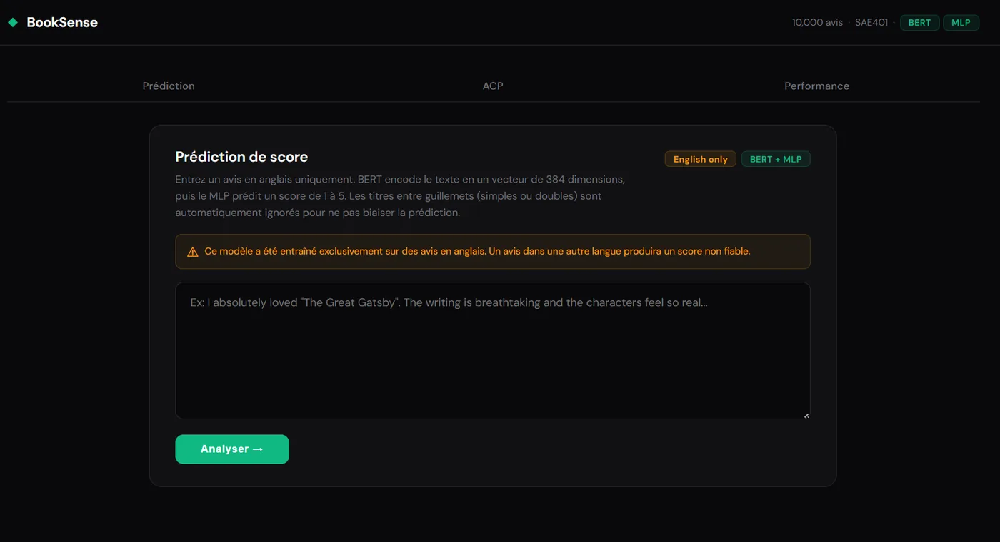
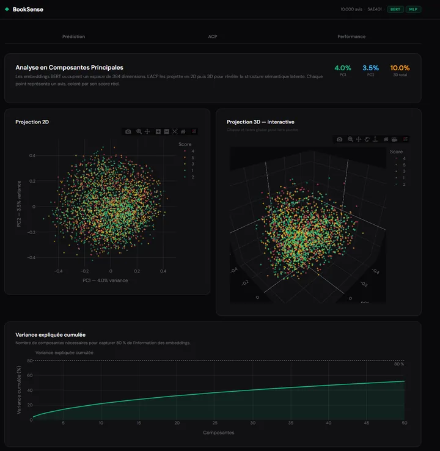
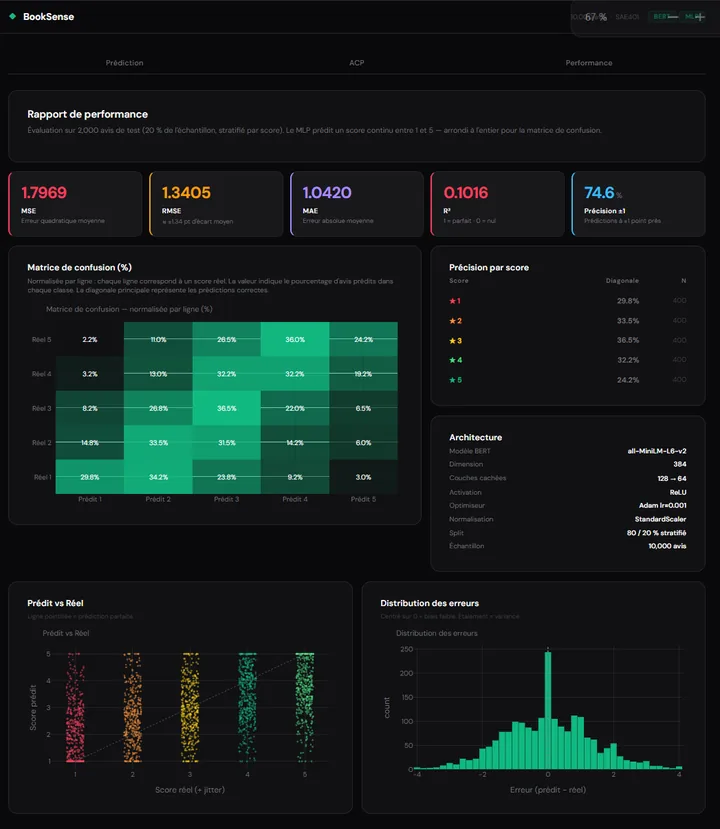

SAÉ 4.VCOD.01 · Semestre 4 · équipe de 3
Prédire la note d’un avis client avec BERT
Une application Dash qui estime la note (de 1 à 5 étoiles) d’un avis de livre à partir de son texte, grâce à des embeddings BERT et un réseau de neurones, avec des onglets d’exploration et de suivi des performances.

Le problème
Les avis clients sont nombreux et textuels : comment en tirer automatiquement une estimation fiable, et la rendre explorable par un décideur ?
Contexte
Le sujet imposait une application modulaire et interopérable, capable d’ingérer un grand volume d’avis Amazon sur des livres.
La démarche
Un échantillon équilibré
Filtrage des livres ayant au moins 10 avis, puis échantillonnage stratifié de 50 000 avis avec autant d’avis pour chaque note, afin d’éviter le biais des notes très positives.
Du texte aux vecteurs
Encodage des avis avec le modèle open source all-MiniLM-L6-v2 (384 dimensions), puis entraînement d’un réseau de neurones MLPRegressor sur les vecteurs normalisés. Modèle et normalisation sont sauvegardés pour être réutilisés.
Une interface en trois onglets
Simulation en temps réel (un avis saisi, une note estimée sur une jauge), projection en 3D des embeddings par ACP, et rapport de performance.
Un pipeline reproductible
Un script batch enchaîne vérification des fichiers, préparation et entraînement ; le modèle est chargé une seule fois grâce à une classe Predictor.
En images


Livrables
- Application Dash à trois onglets
- Scripts d’échantillonnage, d’encodage et d’entraînement
- Script d’orchestration batch
Résultats
- Application fonctionnelle en local, lancée par un script unique.
- Les avis 1 étoile et 5 étoiles se séparent nettement dans la projection ACP.
Limites
- Le modèle peut produire des valeurs hors échelle (par exemple 5,12) : la sortie est bornée entre 1 et 5 par le code.
- Code source pas encore publié : nettoyage en cours avant diffusion.
Ce que j’en retiens
Un modèle d’IA doit toujours être encadré par une couche logicielle stricte. Un outil décisionnel vaut autant par l’enchaînement de ses modules que par la justesse de ses calculs.
Pour les enseignants : SAÉ 4.VCOD.01, compétences et apprentissages critiques
Développement d’un composant d’une solution décisionnelle · semestre 4 · 10 h encadrées
Compétences mobilisées
Apprentissages critiques
AC24.02VCODPercevoir les enjeux de l’automatisation et de l’interopérabilité d’un ensemble de tâchesAC21.03Identifier et résoudre les problèmes d’intégration de sources hétérogènesAC21.04Comprendre la nécessité de tester, corriger et documenter un programmeAC23.03Saisir la nécessité de choisir des indicateurs pertinents pour communiquer sur les résultats
Ressources mobilisées
- R4.01 Automatisation et test
- R4.07 PPP 4
- R4.VCOD.08 Préparation et intégration
- R4.VCOD.09 Programmation web